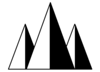
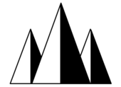
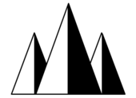
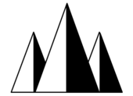

※このウェブサイトの閲覧はPCを推奨しています。
スマートフォン等で閲覧する場合は横画面にしてお使いください。
基礎理論の研究が中心の「化学」とは異なり、人間の生活を豊かにする新しい物質の研究・開発を行います。
化学物質による環境汚染を防ぐ研究や、再利用可能な物質の開発など、私たちの暮らしに深くかかわる応用化学は、
今後ますます注目される分野です。
[取得できる資格]
・毒物劇物取扱責任者
・危険物取扱者乙種１～６類
・技能検定３級(化学分析)
・環境分析測定士３級
・情報処理技能検定(表計算)
・パソコン利用技能検定３級
・計算技術検定３級
機械技術はもとより、工業界のあらゆる分野で活躍できるような視野の広い、中堅技術者の養成を目指しています。
[取得できる資格]
・ガス溶接技能者
・アーク溶接技能者
・ボイラー技士
・危険物取扱者
・電気工事士
・織物設計検定
・機械製図検定
・ＣＡＤ検定
・情報技術検定
・計算技術検定
発電、送電・配電、利用(電気機器・電子機器・制御)までの基本となる知識と技術を幅広く学び、将来、
社会で活躍できる電気技術者の育成を目指します。
[取得できる資格]
・電気主任技術者
・電気工事士
・基本情報技術者
・アマチュア無線技士
・ラジオ音響技能検定
・情報技術検定
・計算技術検定
土や水の力学的性質を知り、構造体をつくることを学び、 最新の設備・機器を導入して視野の広い技術者を育成しています。
[取得できる資格]
・建築士
・宅地建物取引主任者
・２級建築施工管理技術検定
・危険物取扱者
・トレース技能検定
・土地家屋調査士
・小型車両系建設機械運転免許
・危険物取扱者
・情報技術検定
ICT活用能力のほか、プログラミング技術，、信技術など、これからの情報化社会に対応する技術者に必要な知識と技術を、
ソフトウェア・ハードウェアの両面から学びます。
[取得できる資格]
・計算技術検定
・情報技術検定
・パソコン利用技術検定
・製図検定(機械・基礎)
・CAD検定
・基本情報技術者
・ディジタル技術検定
・CG検定
・ITパスポート試験